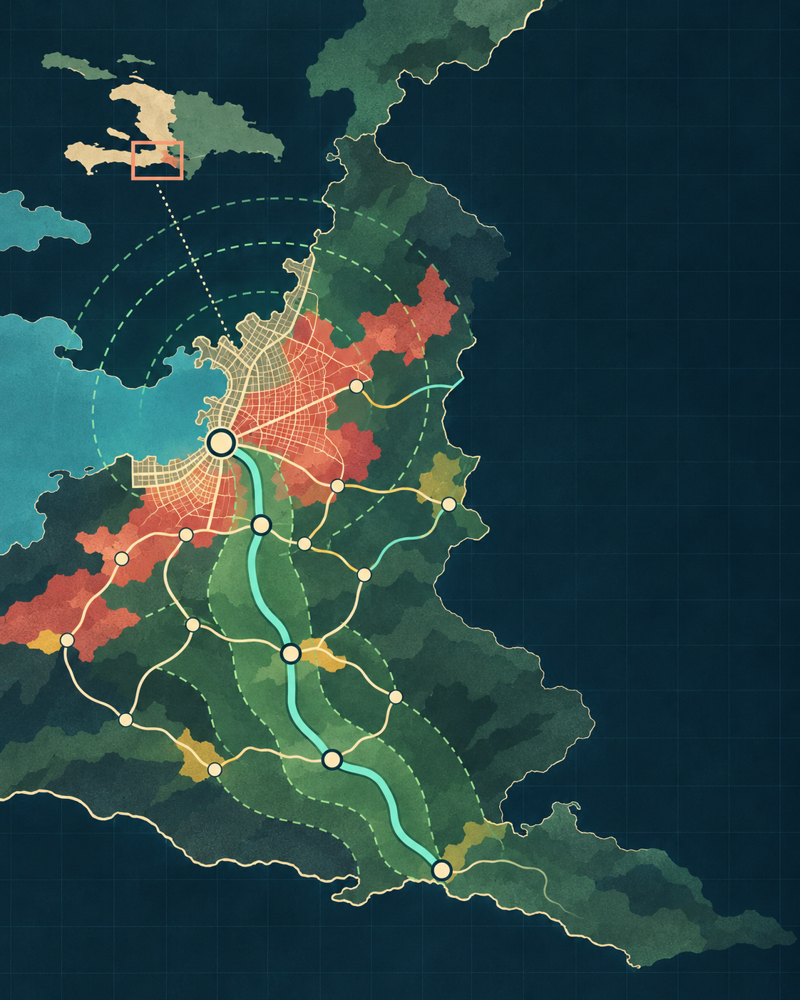

Security operations reported across several areas in Haiti
AP, UN/BINUH and local reporting describe operations and violence in different parts of the country; the accounts are not merged into a single measure of success.

What We Know
Associated Press reporting and local reporting from Ayiti Minute describe security operations in more than one Haitian area, including locations identified in their accounts. The reports provide operational geography, not a complete national picture.
What the UN record adds
The UN/BINUH Q3 2026 report provides a separate human-rights record for 1 July through 30 September. Its incident classifications and reporting period should not be combined with later operational accounts as though they measured the same thing.
Why It Matters
Where operations occur matters for civilian protection, humanitarian access and accountability. A reported operation is not, by itself, evidence of territorial control, reduced violence or a successful outcome.
What We’re Watching
Official PNH or FRG statements, independent casualty verification, humanitarian access and follow-up reporting that can test whether operations changed conditions for residents.